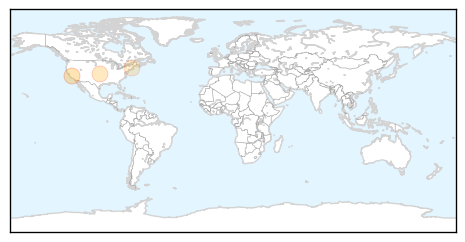
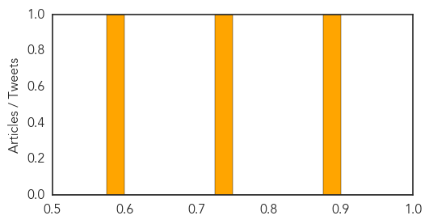
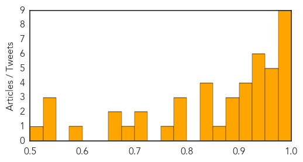

Measles
30-Day Web Trend
4 alerts, 3 warnings

30-Day Twitter Trend
0 alerts, 0 warnings

Article Locations
Article Confidences
Top Articles:
Top Tweets:
-
No tweets found for Sep 19, 2015
Dengue Fever
30-Day Web Trend
30-Day Twitter Trend
Article Locations

Article Confidences
Top Articles:
- 0.993
- Delhi government struggles with dengue outbreak
- 0.992
- First dengue case of the year found in Tanahun
- 0.992
- Hong Kong investigates possible indigenous dengue fever
- 0.986
- Dengue cases could spike: Centre issues advisory to Delhi govt after showers, asks it to step up measures
- 0.985
- Taiwan announces Dengue Treatment Centers, 600 more cases reported
- 0.984
- Tainan mayor puts DPP duties on hold
- 0.983
- Dengue: Delhi hospitals turning away patients may lose licence
- 0.980
- Dengue row: Health Ministry tells Delhi government to intensify control measures
- 0.976
- Climate change effects
- 0.971
- Dengue: Step up check on mosquito breeding after rain, Centre to Delhi govt
- 0.966
- New study reshapes how scientists look at dengue virus
- 0.961
- Rain adds another sting in aedes’ tail
- 0.951
- Delhi woman, 34, dies of of dengue fever bringing toll up to 21
- 0.951
- Multiple Times Dengue Infection Can be Life-Threatening
- 0.948
- Dengue fever alert issued in Bihar, number of cases cross 250-mark
- 0.943
- A new understanding of dengue virus
- 0.938
- Parents' suicide over son's death forces Delhi to boost dengue treatment
- 0.937
- '70 pc of dengue-affected patients acquired it outside state'
- 0.934
- At least 20 cases of high grade fever everyday
- 0.933
- 70 per cent of dengue-affected patients acquired it outside state
- 0.923
- Superspeciality hospitals open up for patients, ‘fever clinics’ to follow
- 0.919
- Guangdong reports 664 dengue cases
- 0.916
- Dengue: Step up check on mosquito breeding after rain, Centre
- 0.913
- Ministry issues fresh advisory to intensify combat against dengue
- 0.899
- Patients Wait For Treatment As Dengue Rush Swamps Delhi Hospitals
- 0.887
- Dengue Situation deteriorates in Odisha; Cases touch to 481 -
- 0.884
- Civic Body Not Doing Enough Fumigation, Say Citizens
- 0.862
- Rains may lead to spurt in dengue cases at National Capital
- 0.844
- The killer Dengue and the sordid saga of poor governance
- 0.843
- SMC fever helpline cold to callers
- 0.837
- Dengue menace: 4 more dead, toll 20
- 0.831
- Delhi government finally wakes up, russels up 400 beds for dengue patients
- 0.787
- NMC’s health department detects 7 dengue patients
- 0.784
- Awareness seminar, walk arranged at RMC & HFH
- 0.781
- Three from Odisha die of dengue in Mumbai; NRO toll seven
- 0.764
- Why second dengue infection can be life-threatening
- 0.722
- Dengue: Delhi govt increases 795 beds in private hospitals
- 0.715
- Four more die of dengue in Delhi, toll rises to 20
- 0.691
- Another dengue death in Delhi, toll 21
- 0.674
- Government rift with civic bodies behind dengue surge?
- 0.651
- Delhi’s battle: A day in the life of a dengue ward
- 0.583
- Delhi government’s fever/dengue clinics to open Monday
- 0.549
- Dengue triggers outbreak of politics in Delhi as death toll rises to 20
- 0.548
- FBC News
- 0.539
- Congress seeks emergency action plan to contain dengue toll
- 0.504
- MLA fought dengue at home, in constituency
Top Tweets:
-
No tweets found for Sep 19, 2015